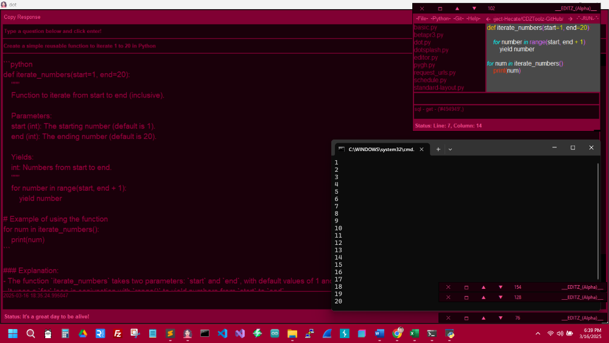
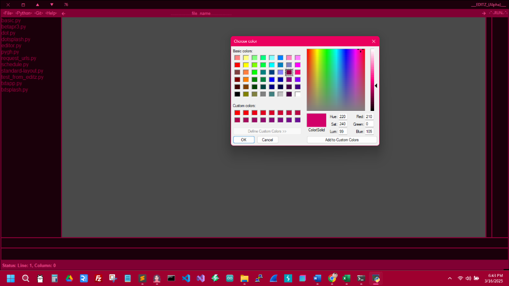
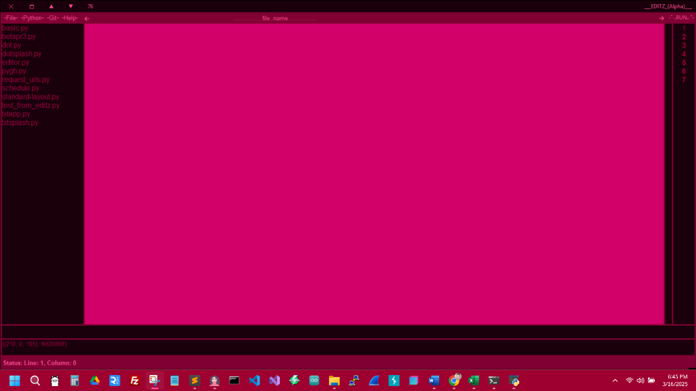

Greetings,
I will incorporate this basic notepad/editor made using Python into the “dot.py” project. It will mainly handle a database of snippets and allow users to keep up with little notes for future reference. This application also has a docking system that allows users to keep up with everything at once—like a multi-tasking system. Although it is not in development to replace other editors, it is helpful when creating projects and finding errors. Once this starts collaborating with the AI Agent, errors will be slimmed down, and the process will significantly speed up, even allowing to run code snippets from the application.
**GUI**
The GUI is made in Tkinter, which is included with the Python Installation, although many modifications were needed to make it look and function the way it does. The application will allow for changing everything to a person's desired colors, and eventually, it will have a lot of customizable features. However, some features are still in development, such as coloring the code, which is mainly done, but adding color is very helpful for readability. More features include the window always remaining on top and allowing a person to make a small snippet-sized window so that testing can be done along with working with the AI Agent to develop well-crafted and readable code. This all starts to allow for a combination of applications configured and designed to a person's needs.
**Docking System**
This project creates a configuration file upon loading. Once loaded, it lists positions that allow the docking system to start docking on the right side of the screen. As one closes, it changes the position to off in the configuration file so that other windows can take the empty spaces.
**Auto-save**
The editor will automatically save when it closes, and you can also save it by pressing Ctrl+S or using the menu at the top. Additionally, it is commented out for testing purposes, but the key binding will save when any changes are made. This ensures that no data is lost in case of a power surge, incorrect power off, etc. Something else in the works is the ability to store data for a while, allowing a user to open another window and surf back in time through all code changes. It will be like an insurance that nothing gets lost, especially once I get the AI Agent working correctly with GitHub push, pulls, etc. I am still working on a script that starts to teach the agent the user's style of coding and will work towards providing hints towards developing further on projects.
Keep checking back for more content, or if you have anything you may like to see on here, email: CrissyMoon711@gmail.com
See the screenshots below.


